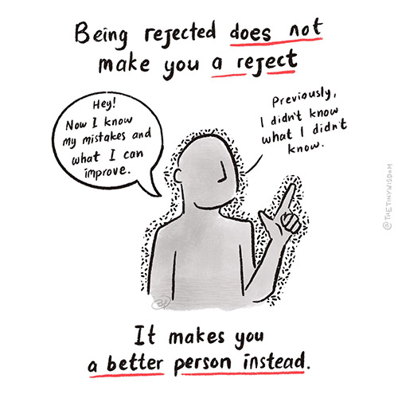
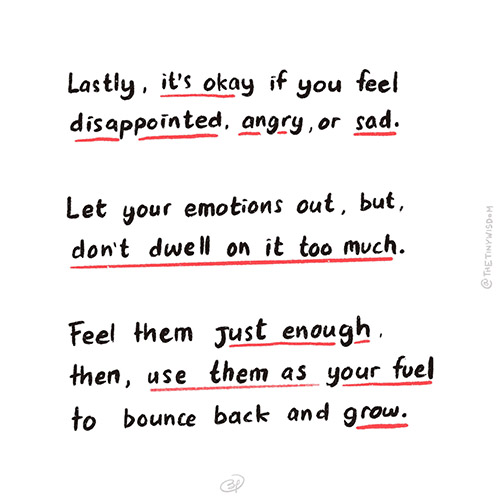

Being Rejected Does Not Make You a Reject
August 16, 2022.
This was originally posted on The Tiny Wisdom website.
Getting a rejection is never easy. You put a lot of effort into something, only to know that you are not good enough. Sometimes it feels like all those efforts went down the drain.
But everyone will face rejection in life. It might be when we are looking for a job, applying for grad school, or as simple as asking for a favour. Rejection is not something that we can avoid, it just happens.
And since it is inevitable, you should look at rejection as something you have to go through.
When we see rejection as an everyday occurrence, it is not as scary anymore. Rejections are just a step we have to take to achieve our goals. It's just a part of the process.

Lastly, don't try to suppress your emotions when you got rejected. But don't be too emotional, do it just enough. It's okay to let it surface, we are human after all.

So the next time you got rejected, be proud. You made your first step, you tried, and you learned something along the way. Sure, you aren't there yet, but you are one step closer towards your goal.
And that's better than not trying at all.
The Tiny Wisdom..